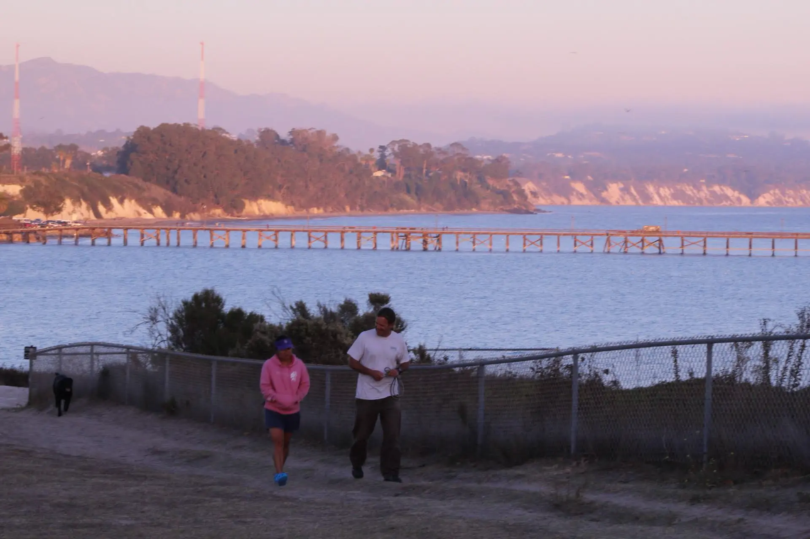
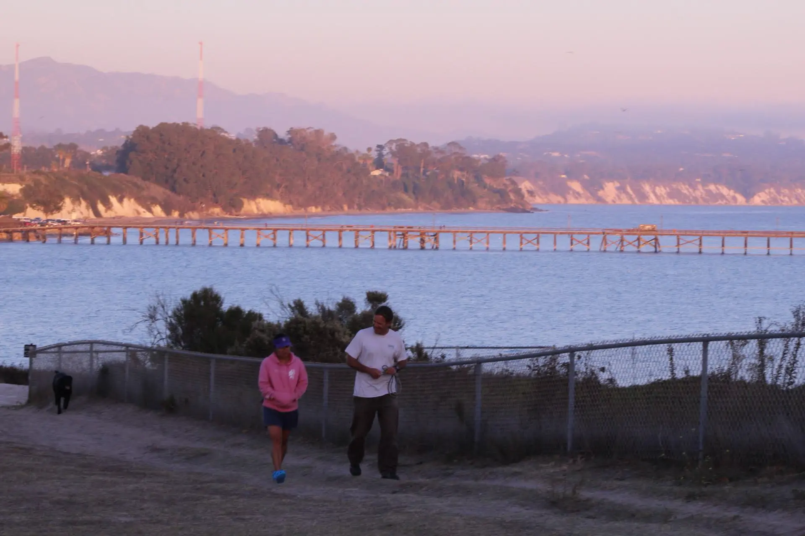

Climbing Up
Spring 2025
My first climbing experience — the fears, the lessons, and techniques.
Read full blog →- About Me -
 NAME:
Luyao Han (pronounced Loo-yow-Hahn).
NAME:
Luyao Han (pronounced Loo-yow-Hahn).
I'm a technology enthusiast and firmware engineer, passionate about bridging hardware and software with efficient solutions that eventually delivers experience to product user. Taking on new challenges pushes me to grow and keeps me motivated, both in work and in life. Throughout my career, I have embraced opportunities that test my skills and expand my knowledge, believing that continuous learning is key to success. I’m grateful for the mentors, colleagues, and my family who have supported me along the way and look forward to tackling future challenges with the same dedication and curiosity.
CAREER INTERESTS: Real-time embedded systems, IoT solutions, computer architecture, signal processing, system engineering.
 EDUCATION:
EDUCATION:
Carnegie Mellon University
M.S. Electrical and Computer Engineering
University of California, Santa Barbara
B.S. Computer Engineering
HOBBY: Top roping, gym and fitness, and photography!
- Engineering Projects -


- Photography -

 

- Blogs -
Spring 2025
My first climbing experience — the fears, the lessons, and techniques.
Read full blog →Spring 2025
The heart of an operating system is task switching, this article to discuss why two stack pointers are maintained.
Read full blog →